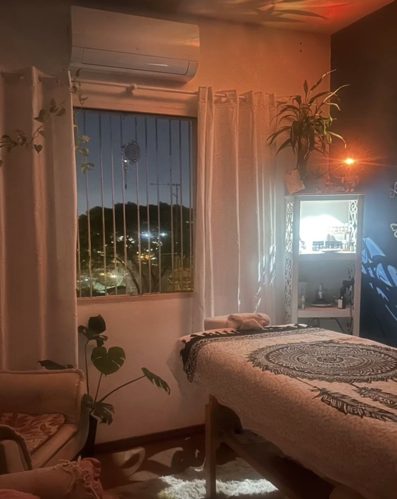
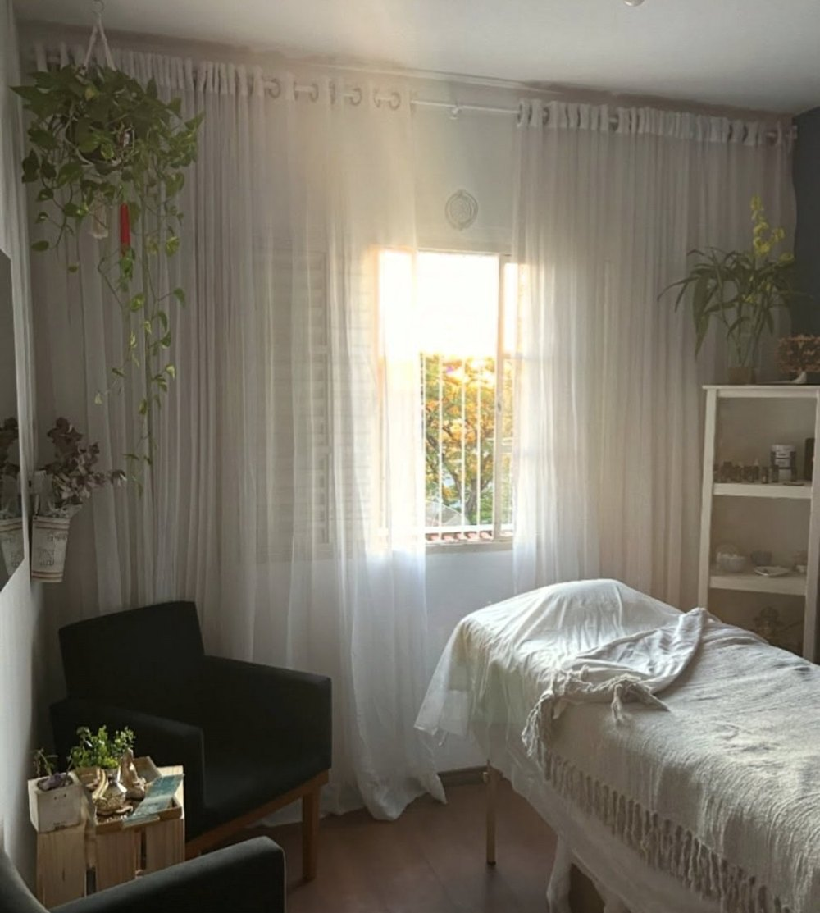

Massagem com Óleos Essenciais
Toque terapêutico com óleos essenciais escolhidos para o momento, para relaxar o corpo e acalmar a mente.
Agendar pelo WhatsApp →Massoterapia · cura pelas mãos
Massoterapia e terapias integrativas para harmonizar mente e corpo, com escuta, técnica e cuidado individual. Atendimento em Jundiaí/SP.


Sobre mim
[Texto em primeira pessoa contando a história da Marina: como chegou à massoterapia, o que a motiva e como enxerga o cuidado com o corpo.]
[Como é o jeito dela de atender: escuta antes da sessão, adaptação da pressão e da técnica a cada pessoa, ambiente tranquilo.]
Terapias
Toque terapêutico com óleos essenciais escolhidos para o momento, para relaxar o corpo e acalmar a mente.
Agendar pelo WhatsApp →Agulhas finas em pontos específicos do corpo, uma técnica milenar usada para buscar equilíbrio e bem-estar.
Agendar pelo WhatsApp →Estímulo de pontos da orelha com sementes ou cristais, um complemento simples ao cuidado do dia a dia.
Agendar pelo WhatsApp →Ventosas que fazem uma leve sucção na pele, usadas para soltar a musculatura e aliviar tensões.
Agendar pelo WhatsApp →O calor das pedras aprofunda o relaxamento e ajuda a soltar a musculatura com mais facilidade.
Agendar pelo WhatsApp →Terapia com laser de baixa intensidade aplicado no pulso. [Explicar indicação em uma frase, nas palavras da Marina.]
Agendar pelo WhatsApp →Escolha o serviço e o melhor horário direto pelo WhatsApp.
Uma anamnese rápida para entender sua rotina, dores e cuidados de saúde.
Técnica e pressão adaptadas a você, num ambiente calmo e acolhedor.
Orientações para casa e, se fizer sentido, sessões recorrentes.
Quem já passou por aqui
“Ela é maravilhosa, mãos mágicas. Ótima profissional, atenciosa demais. Me fez muito bem.”
“Hoje nem queria levantar da cama, dormi tão bem e leve… Nem parece que eu estava estressada ontem.”
“Você tirou um elefante de mim. Tô muito leve!”
“Que dor?? Sério mesmo, sumiu, não tenho mais nada.”
“Fazia meses que não me sentia assim leve.”
Jundiaí/SP · Atendimento somente com horário agendado